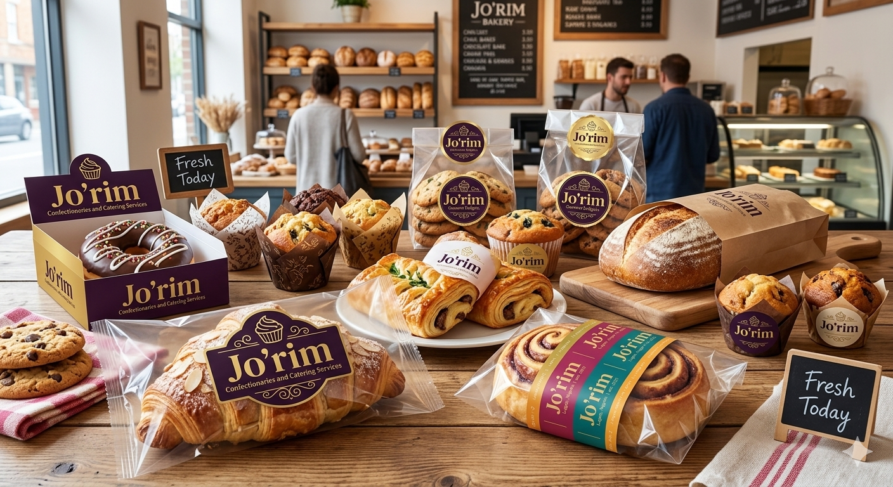

Chef Grace F. Olatuja is a seasoned veteran in the catering and confectionary industry. With over 20 years of experience, she stands out as a mastermind of organization, conduction and art in catering. She established Jo’rim Confectionary and Catering Services the year 2012, the reputation of over 13 plus years in this profession. 13 plus years in a particular field is no joke. Her expertise has built many individuals in this noble profession. She specializes in catering services, event planning, training and consultation. Numerous reports have certified her ability to turn ‘water into wine’ in situations where there was a deficit in planning, her stepping in ensured discipline and promoted efficient output.

So, what can one speak of when referring to excellence in catering, event planning and professional confectionary services, if not Chef Grace F. Olatuja. Her ability to embrace the tenets of catering and confectionary as well as event planning is what makes her undeniably a seasoned practitioner of this profession. Before establishing Jo’rim, she started off practicing her God-given talents of baking and decorating at her church events, family birthdays and personal projects. These endeavours established her abilities and firmly rooted in the profession and by this, came the establishment of Jo’rim Confectionary and Catering Services. Also, trainees are given the opportunity to experience live commerce with respect to the profession. This action fosters the relationship between trainees and the market system of the profession, thereby enabling professionalism in all wise. Some the services rendered by this institution can be found in the home page. Do well to check it out and reach out to us.
Shalom from Jo’rim.